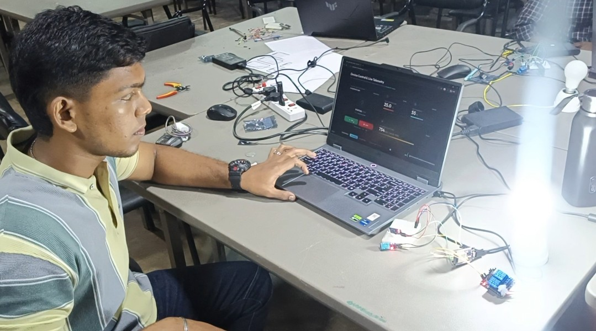
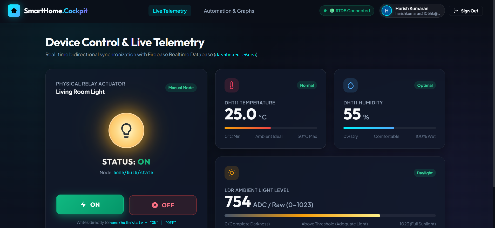
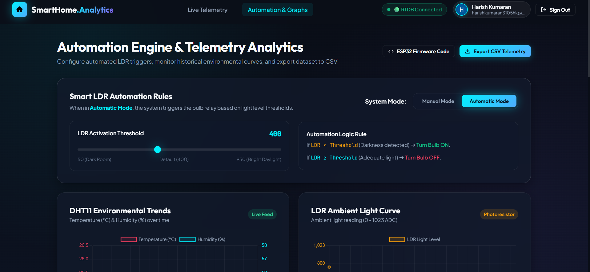
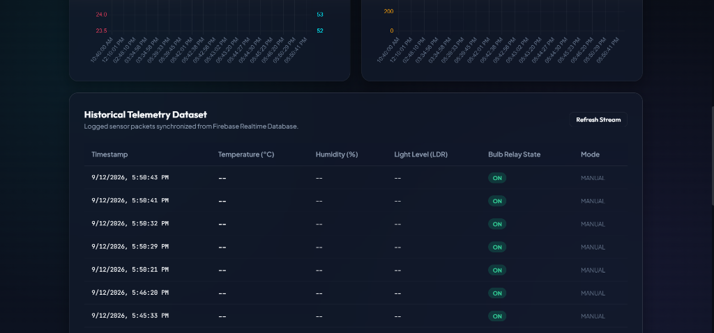

Firebase Logging, Automation & Data Export
Extending the cloud dashboard with physical ESP32 sensing, telemetry logging, and closed-loop environmental automation.
1. Overview
Task 5 extends Task 4 by connecting the physical hardware—ESP32, DHT11, LDR, and relay—with Firebase, automation logic, historical logging, and CSV export. This creates a complete two-way IoT communication pipeline with both human-controlled (manual) and autonomous (sensor-driven) operation capabilities.
2. Objective
The primary objective of this assignment is to complete the IoT system started in Task 04: an ESP32 with a DHT11 temperature and humidity sensor, an LDR light sensor and a relay-controlled bulb that exchanges data with a Firebase Realtime Database, supports manual and automatic bulb control, stores timestamped history and lets the dashboard export the data as CSV.
- Connect the ESP32 microcontroller to the Firebase Realtime Database.
- Read real-time environmental data from DHT11 and LDR sensors.
- Implement toggleable Manual and Automatic operational modes.
- Design threshold-based Temperature and Humidity automation.
- Push historical telemetry logs to the cloud utilizing Firebase server timestamps.
3. Problem Statement
A dashboard alone (Task 04) has nothing to show unless real devices send it data. A relay that is only switched by hand also needs a person to watch the room. Readings that are only shown live cannot be reviewed later.
This task addresses the following problem: How can an ESP32 report sensor readings to the cloud, switch a bulb either on command or automatically from temperature and humidity, and keep a timestamped history that can be viewed and exported?
4. Introduction
Sensing: the DHT11 gives temperature and relative humidity, and the LDR (with a fixed resistor as a voltage divider) gives an analog value that changes with light. The ESP32 reads both through its GPIO pins.
Cloud communication: the ESP32 connects to Wi-Fi and uses the Firebase ESP32 client library to write the readings to Firebase Realtime Database and to read the mode and bulb commands set from the dashboard.
Control and history: in MANUAL mode the dashboard decides the relay state. In AUTO mode the ESP32 decides, using a temperature and humidity rule with hysteresis. Every 15 seconds the ESP32 also appends a log record with a Firebase server timestamp, which the dashboard shows and exports.
5. System Architecture
Confirmed from the sketch and the existing report: sensors feed the ESP32, the ESP32 drives the relay, and the ESP32 and the dashboard meet in Firebase Realtime Database.
Figure 5.1 — System architecture: DHT11 and LDR → ESP32 → relay → bulb, and ESP32 ⇔ Firebase Realtime Database ⇔ web dashboard
Sensors
Edge Compute
Actuator
Cloud Sync
Client UI
6. Hardware Components
Hardware used by the Task 05 prototype (from the sketch header, the README and the existing report):
ESP32 Development Board
Core controller; connects to Wi-Fi and Firebase
DHT11
Temperature and humidity sensor on GPIO 4
LDR + Fixed Resistor
Voltage divider output read on GPIO 34
2-Channel Relay Module
Signal input on GPIO 5 switches the load
230V AC Bulb
Load switched through the relay contacts
Breadboard and Jumper Wires
Wiring of the sensors and the relay signal

Figure 6.1 — Complete prototype on the lab table: laptop showing the dashboard (25.0, 55, 754), breadboard with the DHT11 and ESP32 wiring, relay module in the foreground and the bulb at the right
7. Pin Configuration
Pin assignments as defined in the sketch (DHTPIN 4, LDR_PIN 34, RELAY_PIN 5):
| ESP32 Pin | Constant | Direction | Connected To | Source |
|---|---|---|---|---|
| GPIO 4 | DHTPIN |
Data (DHT one-wire) | DHT11 data pin | Sketch + README |
| GPIO 34 | LDR_PIN |
INPUT (analog) | LDR / fixed resistor voltage divider | Sketch + README |
| GPIO 5 | RELAY_PIN |
OUTPUT | Relay IN (HIGH = bulb ON, LOW = OFF) | Sketch + README |
| Power and ground of the sensors and relay | — | — | Not specified in the available project evidence | To add |
8. Software Requirements
Tools, libraries and cloud services used by the firmware and the dashboard:
Arduino IDE 2.3.10
Compiles and uploads the sketch (version from the earlier report).
Firebase ESP32 Client (Mobizt)
Provides FirebaseESP32.h, FirebaseData, FirebaseJson, pushJSON. Version 4.4.17 per the earlier report.
DHT sensor library
Included as DHT.h; reads the DHT11. The earlier report also lists the Adafruit Unified Sensor library.
WiFi.h
ESP32 Wi-Fi station connection.
Firebase Realtime Database
Cloud store for sensors, control, logs and status.
Firebase Authentication + Hosting
Used by the web dashboard (login, hosted pages).
Serial Monitor (115200 bps)
Matches Serial.begin(115200).
9. DHT11 Temperature and Humidity Monitoring
The DHT11 is a digital sensor that returns temperature (°C) and relative humidity (%) over a single data line. In the sketch it is connected to GPIO 4 and is read with dht.readTemperature() and dht.readHumidity().
Reading Process
Every READ_INTERVAL_MS = 3000 ms the ESP32 reads both values. If either reading is not a number, it prints "Failed to read from DHT sensor!" and skips that cycle.
Update Process
Valid readings are written with Firebase.setFloat to /sensors/temperature and /sensors/humidity, and printed to the Serial Monitor with one decimal.
Units
Temperature in degrees Celsius, humidity in percent relative humidity. The dashboard shows 0–50 °C and 0–100 % scales.
Dashboard Display
The Live Telemetry page shows the temperature and humidity cards with status badges (Figure 9.1).

Figure 9.1 — Dashboard Live Telemetry page: DHT11 temperature 25.0 °C (badge Normal), humidity 55 % (badge Optimal), LDR raw value 754, and the relay card in Manual Mode with ON / OFF buttons. This is the same dashboard as in Task 04 (Figure 21.1)
10. LDR-Based Light-Level Monitoring
The LDR is a resistor whose resistance changes with light. With a fixed resistor it forms a voltage divider, and the ESP32 measures the divider voltage on GPIO 34 with analogRead(LDR_PIN). The result is a raw ADC number, not a lux value.
Reading Method
int light = analogRead(LDR_PIN); inside the 3-second read cycle. The integer is written to /sensors/light and to every log record.
Dashboard Display
Figure 9.1 shows the value 754 on a scale labelled "ADC / Raw (0–1023)" with a "Daylight" badge.
Relation to the Lighting Logic
In the sketch the light value is only stored and displayed. It does not appear in any condition that switches the relay (Section 12).
Scale Note
The sketch does not set the ADC resolution, and the ESP32 default is 12-bit (0–4095), while the dashboard scale shows 0–1023. The reason for the difference is not documented. To confirm
11. Manual Bulb Control
In MANUAL mode the user switches the bulb from the dashboard. The dashboard writes the command to /control/bulb ("ON" or "OFF"). The ESP32 reads /control/mode and /control/bulb on every loop iteration and, when the mode is MANUAL, sets bulbState and drives the relay pin HIGH for ON and LOW for OFF.
Control Interface
The relay card of Figure 9.1 shows STATUS ON with ON and OFF buttons and a Manual Mode badge.
Relay Operation
digitalWrite(RELAY_PIN, bulbState ? HIGH : LOW). The relay module is on GPIO 5 and the bulb is wired through its contacts (Figure 6.1).
Reading Method
The code polls the two paths with Firebase.getString() on each loop pass. It does not use a database stream, although the earlier report describes a "persistent listener".
12. Automatic Bulb Control
The existing automation was checked against the sketch. In AUTO mode the bulb is controlled by temperature and humidity, with hysteresis. The LDR is not part of the automatic bulb control.
| Item | Implementation in the sketch |
|---|---|
| Sensor input | DHT11 temperature t and humidity h (read every 3 s) |
| Turn ON condition | Bulb currently OFF (!autoBulbState) and (t >= 30.0 OR h >= 70.0) |
| Turn OFF condition | Bulb currently ON (autoBulbState) and (t <= 26.0 AND h < 70.0) |
| Relay behaviour | ON: relay pin HIGH, /control/bulb = "ON". OFF: relay pin LOW, /control/bulb = "OFF" |
| Between 26 and 30 °C | No change; the relay keeps its last state (hysteresis band) |
| LDR | Read and logged only; not used in any condition |
To prevent rapid mechanical relay chatter (flickering) when environmental readings hover near
threshold boundaries, a deadband (hysteresis) logic gap is introduced between the ON and OFF trigger
points. The hardware utilizes the autoBulbState state variable to latch the current
operational state, ensuring smooth transitions.
Figure 12.1 — Flowchart of the AUTO-mode logic implemented in the sketch (every 3-second cycle)
13. Manual and Automatic Operating Modes
The mode is stored in /control/mode as "MANUAL" or "AUTO". The sketch starts with currentMode = "AUTO" and re-reads the mode on every loop pass.
Allows authenticated users to override physical hardware states instantly via web dashboard toggles, bypassing local sensor logic.
Empowers the ESP32 to make local actuation decisions based on real-time environmental thresholds without requiring human intervention.

Figure 13.1 — Automation & Graphs page: System Mode switch (Automatic selected), LDR threshold slider (400) with its rule text, DHT11 and LDR chart panels, and the Export CSV Telemetry button. Same dashboard as Task 04 (Figure 21.2)
14. LDR Threshold and Calibration
The sketch contains no LDR threshold constant. The earlier report and the README mention LDR_DARK_THRESHOLD = 1500 "retained in the firmware", but that constant does not appear in the sketch file of the repository. To confirm
How the Reading Is Obtained
analogRead(LDR_PIN) on GPIO 34 returns a raw ADC number that depends on the divider and the light.
What a Threshold Would Represent
A configured ADC value (such as 1500 in the documents or 400 on the dashboard slider) separates "dark" from "bright" for that circuit. It is a number chosen by the user, not a measured physical light level.
Configuration
The dashboard slider ranges from 50 to 950 and is set to 400 in Figure 13.1. Where this value is stored, and whether the ESP32 reads it, is not shown in the sketch.
Testing Under Different Light
The value can be checked by covering the LDR and shining a light on it while watching /sensors/light or the Serial Monitor. No such test is documented in the provided evidence.
15. Firebase Integration and Database Structure
The ESP32 connects to Wi-Fi, then to Firebase Realtime Database with config.host and a legacy database token (config.signer.tokens.legacy_token) and sets /status/online to "true". The dashboard reads and writes the same database.
Firebase Realtime Database
├── sensors/
│ ├── temperature (float, written every 3 s)
│ ├── humidity (float, written every 3 s)
│ └── light (int, raw ADC, written every 3 s)
├── control/
│ ├── mode ("AUTO" | "MANUAL", read each loop)
│ └── bulb ("ON" | "OFF", read each loop; written in AUTO)
├── logs/
│ └── <push id> (record every 15 s, see Section 16)
└── status/
└── online ("true", set once at start-up)16. Historical Data Logging
Instead of overwriting one value, the ESP32 appends a new record to /logs with Firebase.pushJSON() every LOG_INTERVAL_MS = 15000 ms. A record is built only when both DHT readings are valid.
| Logged field | Value written by the sketch |
|---|---|
temperature |
DHT11 temperature (°C, float) |
humidity |
DHT11 relative humidity (%, float) |
light |
Raw LDR ADC reading (int) |
mode |
"AUTO" or "MANUAL" |
bulb |
"ON" or "OFF" (from bulbState) |
timestamp |
Firebase server timestamp, set with the placeholder ".sv/timestamp" |
Timing configuration
READ_INTERVAL_MS
3000 ms (Sensor sampling rate)
LOG_INTERVAL_MS
15000 ms (Historical cloud push rate)
17. Historical Data on the Dashboard
The dashboard retrieves the records and shows them in charts and in a table. Features described in the earlier report:
Temperature & Humidity
Ambient Light
Device Status
Manual/AUTO Mode
Bulb ON/OFF
Live Trend Chart
Historical Records
CSV Export

Figure 17.1 — Historical Telemetry Dataset (existing project screenshot): the lower parts of the two charts (time labels on the x-axis; left chart scales about 23.5–24.0 and 52–53, right chart 0–200) and the table with timestamp, temperature, humidity, light level, bulb relay state and mode columns, with a Refresh Stream button
18. CSV Data Export
The dashboard provides an Export CSV Telemetry button on the Automation & Graphs page (Figure 13.1). The earlier report describes it as generating a CSV file from the recorded history in the browser.
How the Download Starts
The user clicks Export CSV Telemetry in the page header (Figure 13.1).
Fields
The history table shows the columns timestamp, temperature, humidity, light level, bulb relay state and mode (Figure 17.1). The exact columns of the exported file were not provided.
Checking the File
The downloaded file can be opened in a spreadsheet program or text editor and compared with the table rows.
19. Source Code
The sketch below is the file Firebase-IoT-Environment-Monitor.ino from the project repository, shown exactly as it exists (credentials in the file are placeholders):
1/*
2 * 🌐 Firebase IoT Environment Monitor (Task 5)
3 *
4 * Hardware:
5 * - ESP32
6 * - DHT11 (GPIO 4)
7 * - LDR (GPIO 34)
8 * - 2-Channel Relay (GPIO 5)
9 *
10 * IMPORTANT: Use placeholders for credentials.
11 */
12
13#include <WiFi.h>
14#include <FirebaseESP32.h>
15#include "DHT.h"
16
17// -------------------------
18// Credentials (Placeholders)
19// -------------------------
20#define WIFI_SSID "YOUR_WIFI_NAME"
21#define WIFI_PASSWORD "YOUR_WIFI_PASSWORD"
22#define FIREBASE_HOST "YOUR_FIREBASE_PROJECT_ID.firebaseio.com"
23#define FIREBASE_AUTH "YOUR_FIREBASE_DATABASE_SECRET"
24// For Firebase Authentication:
25#define USER_EMAIL "ESP32_ACCOUNT_EMAIL"
26#define USER_PASSWORD "ESP32_ACCOUNT_PASSWORD"
27
28// -------------------------
29// Pins & Settings
30// -------------------------
31#define DHTPIN 4
32#define DHTTYPE DHT11
33#define LDR_PIN 34
34#define RELAY_PIN 5
35
36DHT dht(DHTPIN, DHTTYPE);
37
38FirebaseData fbdo;
39FirebaseAuth auth;
40FirebaseConfig config;
41
42// -------------------------
43// Timing Intervals
44// -------------------------
45unsigned long lastReadTime = 0;
46const unsigned long READ_INTERVAL_MS = 3000;
47
48unsigned long lastLogTime = 0;
49const unsigned long LOG_INTERVAL_MS = 15000;
50
51// -------------------------
52// State Variables
53// -------------------------
54String currentMode = "AUTO";
55bool bulbState = false;
56bool autoBulbState = false; // Hysteresis state tracker
57
58void setup() {
59 Serial.begin(115200);
60
61 pinMode(LDR_PIN, INPUT);
62 pinMode(RELAY_PIN, OUTPUT);
63 digitalWrite(RELAY_PIN, LOW); // Default OFF
64
65 dht.begin();
66
67 // Connect Wi-Fi
68 Serial.print("Connecting to Wi-Fi");
69 WiFi.begin(WIFI_SSID, WIFI_PASSWORD);
70 while (WiFi.status() != WL_CONNECTED) {
71 delay(500);
72 Serial.print(".");
73 }
74 Serial.println("\nConnected to Wi-Fi");
75
76 // Firebase Setup
77 config.host = FIREBASE_HOST;
78 config.signer.tokens.legacy_token = FIREBASE_AUTH;
79
80 // Alternative Auth (Email/Password) if using newer Firebase Client
81 /*
82 config.api_key = "YOUR_WEB_API_KEY";
83 auth.user.email = USER_EMAIL;
84 auth.user.password = USER_PASSWORD;
85 */
86
87 Firebase.begin(&config, &auth);
88 Firebase.reconnectWiFi(true);
89
90 // Set initial status
91 Firebase.setString(fbdo, "/status/online", "true");
92
93 Serial.println("Firebase Connected & Ready.");
94}
95
96void loop() {
97 unsigned long currentMillis = millis();
98
99 // Check Control Mode from Firebase continuously
100 if (Firebase.getString(fbdo, "/control/mode")) {
101 currentMode = fbdo.stringData();
102 }
103 if (Firebase.getString(fbdo, "/control/bulb")) {
104 String bulbCmd = fbdo.stringData();
105 if (currentMode == "MANUAL") {
106 bulbState = (bulbCmd == "ON");
107 digitalWrite(RELAY_PIN, bulbState ? HIGH : LOW);
108 }
109 }
110
111 // 1. Read Sensors (Every 3s)
112 if (currentMillis - lastReadTime >= READ_INTERVAL_MS) {
113 lastReadTime = currentMillis;
114
115 float t = dht.readTemperature();
116 float h = dht.readHumidity();
117 int light = analogRead(LDR_PIN);
118
119 if (isnan(t) || isnan(h)) {
120 Serial.println("Failed to read from DHT sensor!");
121 return;
122 }
123
124 Serial.printf("Temp: %.1f°C | Hum: %.1f%% | LDR: %d | Mode: %s\n", t, h, light, currentMode.c_str());
125
126 // Update live sensors
127 Firebase.setFloat(fbdo, "/sensors/temperature", t);
128 Firebase.setFloat(fbdo, "/sensors/humidity", h);
129 Firebase.setInt(fbdo, "/sensors/light", light);
130
131 // 2. Automation Logic
132 if (currentMode == "AUTO") {
133 // Trigger ON: Temperature >= 30°C OR Humidity >= 70%
134 if (!autoBulbState && (t >= 30.0 || h >= 70.0)) {
135 autoBulbState = true;
136 bulbState = true;
137 digitalWrite(RELAY_PIN, HIGH);
138 Firebase.setString(fbdo, "/control/bulb", "ON");
139 Serial.println("AUTO Trigger: ON");
140 }
141 // Trigger OFF: Temperature <= 26°C AND Humidity < 70%
142 else if (autoBulbState && (t <= 26.0 && h < 70.0)) {
143 autoBulbState = false;
144 bulbState = false;
145 digitalWrite(RELAY_PIN, LOW);
146 Firebase.setString(fbdo, "/control/bulb", "OFF");
147 Serial.println("AUTO Trigger: OFF");
148 }
149 }
150 }
151
152 // 3. Historical Logging (Every 15s)
153 if (currentMillis - lastLogTime >= LOG_INTERVAL_MS) {
154 lastLogTime = currentMillis;
155
156 float t = dht.readTemperature();
157 float h = dht.readHumidity();
158 int light = analogRead(LDR_PIN);
159
160 if (!isnan(t) && !isnan(h)) {
161 // Construct JSON
162 FirebaseJson json;
163 json.set("temperature", t);
164 json.set("humidity", h);
165 json.set("light", light);
166 json.set("mode", currentMode);
167 json.set("bulb", bulbState ? "ON" : "OFF");
168 json.set("timestamp", ".sv/timestamp"); // Server timestamp
169
170 if (Firebase.pushJSON(fbdo, "/logs", json)) {
171 Serial.println("Log pushed successfully.");
172 } else {
173 Serial.println("Failed to push log: " + fbdo.errorReason());
174 }
175 }
176 }
177}20. Code Breakdown
Libraries and Settings
WiFi.h, FirebaseESP32.h and DHT.h are included. Pins: DHTPIN 4, LDR_PIN 34, RELAY_PIN 5. Intervals: read 3000 ms, log 15000 ms.
setup()
Starts Serial at 115200, sets the LDR as input and the relay as output (LOW = OFF), starts the DHT, joins Wi-Fi, configures Firebase with the legacy token, and writes /status/online.
Control Polling
Each loop pass reads /control/mode and /control/bulb. If the mode is MANUAL, the relay follows the bulb command.
Sensor Read Block
Every 3 s: read DHT11 and LDR, skip on invalid DHT data, print the values, write /sensors/*.
AUTO Logic
Hysteresis with autoBulbState: ON at 30 °C or 70 %, OFF at 26 °C and below 70 %. The relay and /control/bulb are updated together.
Logging Block
Every 15 s builds a FirebaseJson record (temperature, humidity, light, mode, bulb, timestamp) and calls Firebase.pushJSON(fbdo, "/logs", json).
21. Video Demonstration
Firebase IoT Environment Monitor — Task 05 Demonstration
Prototype with ESP32, sensors, relay and bulb running with the cloud dashboard.
22. Problems and Solutions
Problems recorded in the existing report and the repository README:
Challenge: Initial relay flicker and database overwrites.
Fix: Changed active automation from solely LDR to a combined Temperature +
Humidity matrix. Prevented relay flicker by integrating hysteresis logic. Transitioned from
simple set() operations to pushJSON() for chronological historical
record preservation.
Problem: Relay Chatter
The README states that the bulb flickered rapidly when the temperature hovered at 30 °C.
Solution: hysteresis with a lower OFF threshold of 26 °C (implemented in the sketch).
Problem: Crashes With Large Pushes
The README states that pushing large JSON payloads too quickly crashed the ESP32.
Solution: separate timers for the 3-second live update and the 15-second log push (implemented in the sketch). The cause (memory) is as stated in the README and was not independently verified.
Open Item: Documents and Sketch Differ
The earlier report/README mention LDR_DARK_THRESHOLD, a persistent database listener, a headless Firebase account, Firebase.RTDB.setTimestamp() and a file named task5_esp32_firebase.ino. None of these appear in the repository sketch (Sections 14, 15, 27).
23. Learning Outcomes
What this assignment demonstrates:
ESP32-Based IoT Monitoring
One ESP32 can sense, decide, actuate and report to the cloud in a single non-blocking loop.
Temperature and Humidity Sensing
A DHT11 gives usable readings every few seconds, and invalid readings must be handled.
LDR Monitoring
An LDR with a divider gives a raw analog value; a raw ADC number is not a calibrated light measurement.
Manual and Automatic Control
The same relay can follow the dashboard or an on-device rule, and hysteresis prevents rapid switching.
Firebase Realtime Database
A shared JSON tree lets the device and the dashboard exchange sensors, control values and logs.
Timestamped Logging
Pushing records with a server timestamp builds a history without relying on the ESP32 clock.
Dashboard Visualization
Live cards, charts and a history table present the same data in different ways.
CSV Export
Exporting history allows analysis outside the dashboard (the exported file itself is not in the evidence).
24. Reflection
This task joined everything from the week into one working loop: sensors, the ESP32, the relay, Firebase and the dashboard. The most useful lesson was how the automation really works. My bulb is switched by temperature and humidity with hysteresis, and the LDR is only monitored, so it was important to describe the code and not the idea I had in mind. Checking my report against the sketch also showed me details that need correcting, such as the threshold constant and the way the mode is read. Next time I would capture the Firebase Console and the downloaded CSV while testing, so the evidence is complete.
25. Conclusion
Task 05 connects an ESP32 with a DHT11, an LDR and a relay-controlled bulb to Firebase Realtime Database. The sketch reads the sensors every 3 seconds, writes them to /sensors, follows /control in MANUAL mode, switches the bulb automatically in AUTO mode at 30 °C / 70 % ON and 26 °C / below 70 % OFF, and pushes a timestamped record to /logs every 15 seconds.
The provided evidence shows the assembled prototype, the dashboard with live readings, the mode and export controls, a historical table, and a demonstration video of the bulb lighting. The Firebase Console views, the stored log records, the CSV file and the LDR circuit photograph are still to be added, and the differences between the documents and the sketch should be confirmed.
✅ The ESP32 firmware, Firebase data paths, hysteresis automation and timestamped logging are documented from the actual code. Features without evidence (CSV file contents, mode-switch test, Firebase log view) are marked rather than claimed.
26. References
Documentation and resources consulted during implementation:
- Mobizt. Firebase Arduino Client Library for ESP32. GitHub — mobizt/Firebase-ESP32. github.com
- Google Firebase. Realtime Database Documentation. Google LLC. firebase.google.com
- Adafruit Industries. DHT sensor library. GitHub — adafruit/DHT-sensor-library. github.com
- Espressif Systems. ESP32-WROOM-32 Datasheet. Espressif Systems, 2023. espressif.com
- Project files. Task 04 report (week7-task4.html) for the dashboard.